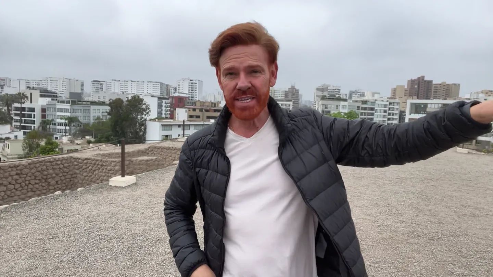

Miraflores & 太平洋
悬崖上的步道、公园与日落，很快就能让你理解利马的地理。也是第一次到访最省心的落脚点。
如果利马只是转机点，你会错过秘鲁旅程最自然的开场。让太平洋、城市街区、饮食文化与第一印象先出现，再进入安第斯高地，整条路线会更有层次。

步行感、氛围与太平洋。
足够建立城市印象，又不过度塞满。
街区、饮食、历史与日落。
先抵达秘鲁，再进入安第斯。
最初的秘鲁路线里，利马的任务非常清楚：文化与饮食的开场、旅行者对国家的第一印象，以及在进入高海拔之前先建立城市尺度。这个逻辑对自由行同样成立——它让旅程真正“开始”，而不是直接跳到地标。

如果利马只是转机点，你会错过秘鲁旅程最自然的开场。让太平洋、城市街区、饮食文化与第一印象先出现，再进入安第斯高地，整条路线会更有层次。
悬崖上的步道、公园与日落，很快就能让你理解利马的地理。也是第一次到访最省心的落脚点。
更有创意、更适合慢走：艺术、建筑、叹息桥、咖啡馆，以及傍晚后逐渐显现的街区气质。
Plaza Mayor、教堂与殖民时期城市肌理，与海岸区形成完全不同的阅读方式。
原始路线把利马定义为文化与饮食的开场。沿用这个思路：给城市留观察的空白，而不是赶着在飞库斯科前打卡。
入住后先认识街区，沿 Malecón 走一段。如果时间合适，把第一场日落交给太平洋。
白天看历史中心，之后切换到 Barranco，让城市从历史层进入更当代的节奏。
用在饮食、博物馆、市场，或干脆保留一个不赶时间的上午，再飞往库斯科。
利马并不难安排。把季节、停留晚数、落脚街区和进入高海拔前的节奏想清楚，整条秘鲁路线会顺很多。
利马海岸全年较温和。南半球夏季通常更明亮；冬季，尤其 6–8 月，garúa 海雾细雨和灰色天空很常见。它不是“坏天气”，只是城市光线完全不同。
2 晚能完成核心阅读；3 晚可以让 Miraflores、Barranco 与历史中心真正展开，也为后面的库斯科留出更舒服的节奏。
对大多数国际旅行者，利马是进入秘鲁的主要航空门户。机场接送最好提前安排，住宿则应按旅行体验而不只是地图距离来选。
先确定机票和酒店。如果有一定要体验的餐厅或城市体验，再提前锁定；其他部分可以比马丘比丘段更有弹性。
第一次到利马，Miraflores 最简单；如果更重视氛围，Barranco 更有个性。
利马尺度很大。真正生活三个街区，通常比整天横穿城市更有价值。
秘鲁也通过餐桌介绍自己。选择符合你饮食方式的体验，而不是只追著名名单。
下一站是库斯科。不要在利马已经把体力透支。
第一次到利马，Miraflores 通常更省心；如果你更看重艺术、街区气质和慢走，Barranco 更有个性。
两天可以，三天更像 LTS 的节奏：太平洋/Barranco、历史/饮食，再留一个比较自由的城市日。
LTS 更喜欢利马在前：先在海平面读懂秘鲁的城市与海岸，再进入安第斯高地。
通常不用，但海风、湿气和 garúa 可能让轻薄外套很实用，尤其夜晚和较凉月份。
实用信息依据官方来源核对。规则、时间与余票可能变化，出发前请再次确认。